Jedwabne ostrze
Kościany wartownik
Agent zasłony
Prorok eteru
Jadeitowa straż
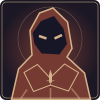
Cień Wojny
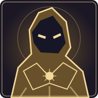
Cień Prawdy
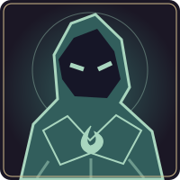
Cień Żywiołu
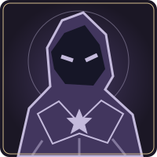
Cień Czasu
Cień Śmierci
Cień Geniuszu
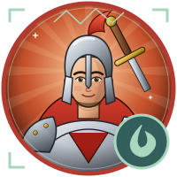
Wojownik Oazy
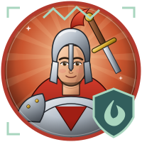
Wojownik Wydm
Kapłan Skruchy
Kapłan Bitwy
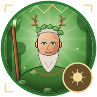
Druid Blasku
Druid Mroku
Mag Natury
Mag Wiary
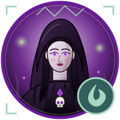
Nekromantka Dziczy
Nekromantka Znaków
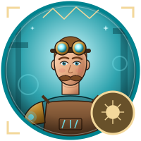
Runotechnik Blasku
Runotechnik Arkanów
Burzomierz Energii
Burzomierz Stali
Strażnik Mroku
Strażnik Korzeni
Wyrocznia Głębin
Wyrocznia Znaków
Zwiadowca Ostrza
Zwiadowca Żaru
Żniwiarz Trybów
Żniwiarz Żelaza
Szermierz Ostrza
Szermierz Obrzędu
Mędrzec Blasku
Mędrzec Bitwy
Strażnik Prądu
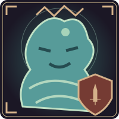
Strażnik Rozrostu
Tkacz Sieci
Tkacz Jadu
Wartownik Kości
Wartownik Stali
Agent Płaszcza
Agent Szpady
Alchemik Blasku
Alchemik Cienia
Tropiciel Znaków
Tropiciel Szponów
Kopijnik Mroku
Kopijnik Łaski
Prorok Brzasku
Prorok Nocy
Straż Chi
Straż Fu
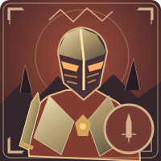
Rycerz Woli
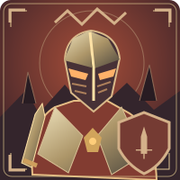
Rycerz Ciała
Destylator Krwi
Destylator Stali
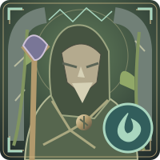
Strażnik Puszczy
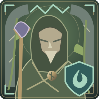